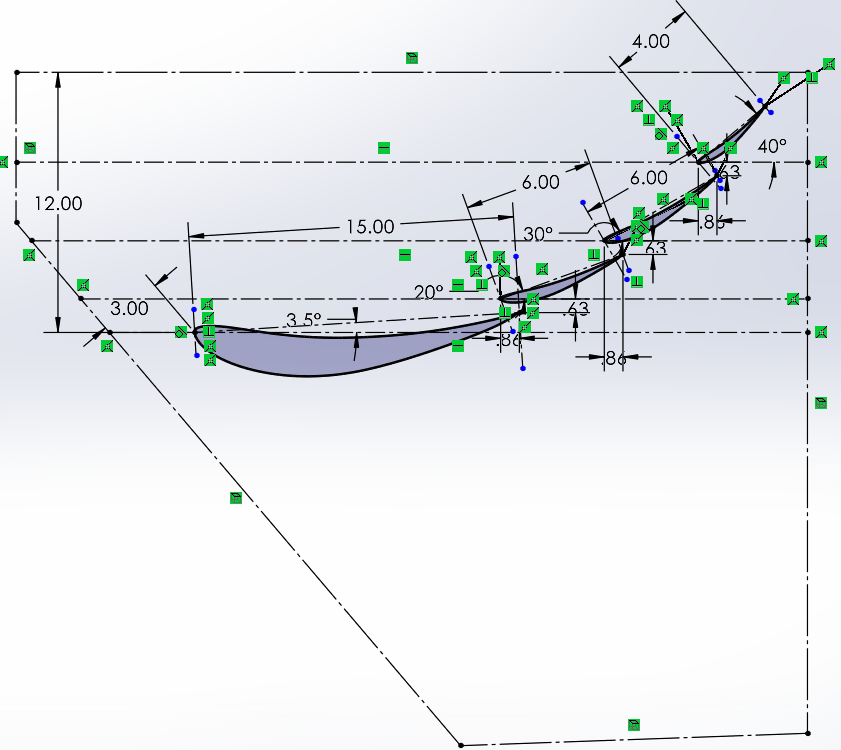
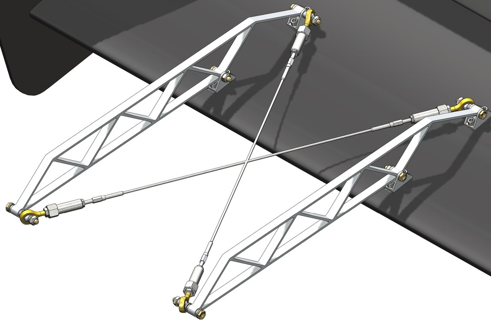
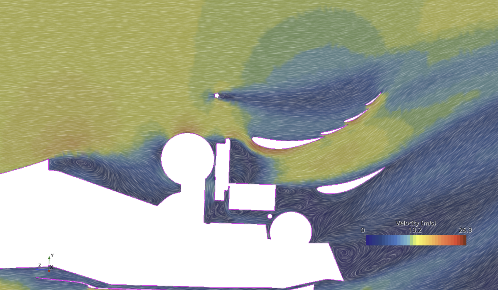
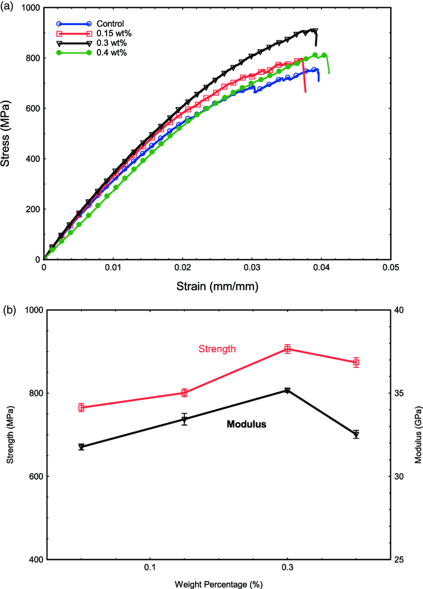
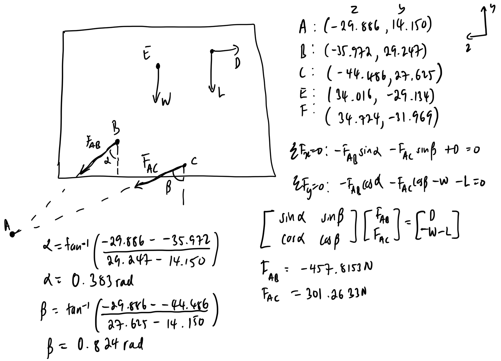
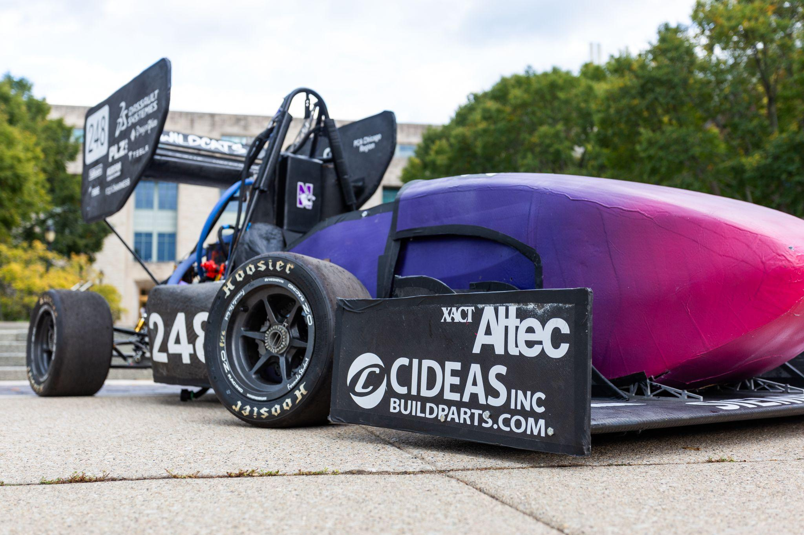

FSAE Rear Wing Redesign & Tire Wake Management
Airfoil selection, 3D Siemens Star CCM+ CFD mesh validation, OptimumLap track lap time optimization, structural mechanics calculation, FMEA risk mitigation, and composite manufacturing.
Project Overview & 2024 FSAE Regulation Compliance
The primary objective of the NFR24 Rear Wing Redesign was to significantly increase aerodynamic efficiency (L/D ratio) beyond the 2.5 baseline set by NFR23 while maintaining strict compliance with updated Formula SAE 2024 structural and geometric rules:
- Rule EV4.8 (Geometric Boundaries): Rear wing height constrained within 1.2 m above the ground; forward setback within 250 mm of the rear wheel centerline.
- Airfoil Selection: Conducted 2D CFD screenings across UIUC airfoils (S1223, MSHD, NACA 6412, NACA 4412). Selected S1223 for high camber at low Reynolds numbers (Re ≈ 250,000).
- Tire Wake Mitigation: Designed endplate Gurney flaps and slot gaps to energize boundary layer flow over upper elements and isolate the wing from turbulent rear tire wake.
CAD Assembly & Airfoil Profiling



Siemens Star CCM+ 3D CFD & Mesh Validation
To validate the aerodynamic downforce and drag coefficients, full-car 3D Reynolds-Averaged Navier-Stokes (RANS) simulations were executed in Siemens Star CCM+ with dynamic wheel rotation and moving ground boundary conditions.
- Mesh Refinement: Trimmer mesh with 5 surface refinement levels and 12 prism layers around airfoil trailing edges.
- Mesh Quality Verification: Checked 4 critical Star CCM+ diagnostics to guarantee solution convergence:
- Face Validity: 1.0 (Zero negative volume faces).
- Cell Quality: Minimum 0.32 (Exceeding 0.10 threshold).
- Skewness Angle: Maximum 74.2° (Below 85° limit).
- Volume Change: Maximum ratio 1.85 (Below 2.0 limit).


Track Simulation & Structural Mechanics
Aerodynamic coefficients extracted from Star CCM+ (CDA = 0.82, CLA = 2.45) were input into OptimumLap software simulating the 2019 FSAE Michigan Autocross track layout.
Lap Time Impact: The redesigned wing reduced total autocross lap time by 0.42 seconds compared to the baseline NFR23 configuration, providing a net gain of 38.5 competition points.
Structural Mechanics & Hand Calculations


Composite Tooling, FMEA & Bill of Materials


Failure Modes and Effects Analysis (FMEA)
| Failure Mode / Scenario | Potential Impact | Prevention Strategy | Detection & Solution |
|---|---|---|---|
| Mounting bolt shear under drag load | Wing detachment on track | Grade 8.8 steel hardware; FOS > 3.0 | Pre-race torque inspection & safety tether |
| Airfoil delamination at high speed | Loss of aerodynamic downforce | Debulking vacuum cycles; post-cure thermal bake | Tap testing & visual ultrasonic scan |
| Cable tension relaxation during endurance | Wing flutter / angle of attack shift | Turnbuckle locking nuts & pre-stretched wire | Pre-run cable tension gauge check |
Parts List & Cost Bill of Materials (BOM)
| Item Description | Material / Spec | Qty | Unit Cost | Total Cost |
|---|---|---|---|---|
| 3K 2x2 Twill Carbon Fiber Fabric | Composites Envis. 6oz | 5 yards | $45.00 | $225.00 |
| Epoxy Resin & Hardener System | West System 105/206 | 1 gal | $120.00 | $120.00 |
| MDF Mold Tooling Stock | 3/4" High Density MDF | 4 sheets | $35.00 | $140.00 |
| Swan Neck Aluminum Mount Brackets | 6061-T6 Aluminum CNC | 2 pcs | $180.00 | $360.00 |
| Aircraft Grade Support Cables & Turnbuckles | 316 SS 1/8" Wire | 1 set | $85.00 | $85.00 |
| Total Rear Wing Project Expenditure | $930.00 | |||